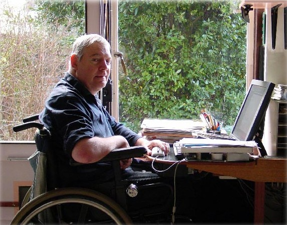

Toby Churchill Lightwriter SL1
A speech prosthesis with two screens — one for the typer, one facing the listener

Overview
The Lightwriter is a portable augmentative and alternative communication (AAC) device invented by Toby Churchill, a British engineer who lost his own speech and almost all motor function to encephalitis contracted in 1968 at age 21. After rehabilitation at Stoke Mandeville, Churchill — dissatisfied with the rudimentary POSSUM row/column scanner then available — designed a portable typewriter-style aid that displayed text rather than printing on paper, and founded Toby Churchill Ltd in 1973 to manufacture it. The defining form of the device, materialized in the SL1 (c. 1985), pairs two back-to-back LCD displays (one facing the user, one facing the listener) with a compact QWERTY keyboard and a speech synthesizer, so a person who cannot speak can type a message that the conversation partner reads in real time while also hearing it spoken aloud. This face-to-face, shared-visual-workspace design became the canonical British AAC paradigm and remained in production through descendants SL35 (1994) and SL40 (2008) under what is now Abilia Ltd. Churchill received a British Design Award; the company won the Queen's Award for Export (1995, 1996) and appeared four times on BBC's Tomorrow's World in the 1970s.
Deep dive
Toby Churchill DEng FRSA (born 29 June 1947, Cambridge) was educated at The Perse School and the University of Bath (engineering with French). He contracted encephalitis in 1968 while on a French work placement — swimming in a polluted river left him locked-in within 24 hours. A quirk of history: French President de Gaulle, mistakenly assuming the surname 'Churchill' meant kinship with Winston, arranged a private jet to fly him home to Addenbrooke's Hospital, Cambridge. After six months at Addenbrooke's and nine months at Stoke Mandeville, he regained limited movement (left hand and arm, some leg movement) and never regained speech. Dissatisfied with the rudimentary POSSUM row/column scanner then available to speech-impaired users in the UK, Churchill used his engineering training to design a portable typewriter-style aid that displayed text on a screen rather than printing it on paper. He founded Toby Churchill Limited in 1973 to manufacture the device.
The Lightwriter SL1 has three coordinated output channels: (1) a user-facing dot-matrix LCD on which the message is composed with cursor and editing; (2) a listener-facing dot-matrix LCD on the back of the case showing the same text appearing character-by-character, so the partner can begin reading before the user finishes the utterance — eliminating the awkward 'swivel the device' or 'read aloud what I typed' steps that single-display AAC requires; (3) a built-in speech synthesizer that speaks the typed message through a loudspeaker, allowing novel utterances (not just pre-recorded phrases). The input is a compact QWERTY keyboard with a small number row and function keys — direct-selection, not scanning or icon-based, presupposing literacy and usable hand movement. The whole package is battery-powered (rechargeable NiCd), roughly 1.1–1.3 kg, ~220 × 140 × 45 mm, designed to sit on a lap or table. Later models added switch-scanning access and word prediction for users with limited hand movement or to accelerate output. The combination — keyboard input + dual-display shared workspace + spoken output, in a portable package — makes the Lightwriter a distinct HCI paradigm: a speech prosthesis explicitly designed for face-to-face conversation rather than just voice substitution.
Toby Churchill Ltd (Cambridge; later based in Swavesey) sold the Lightwriter line continuously from 1973. The original 1973 model was a single-display typewriter-style device; the SL1 (c. 1985) was the first dual-LCD model and established the form factor most associated with the Lightwriter name. The SL2 (~1987) and SL3 (~1990) were incremental revisions. The SL35 (1994–2008) used higher-quality DECtalk-class speech synthesis (the same family as Stephen Hawking's later voice) and was the model most widely sold internationally. The SL40 (2008+) added modern connectivity. Toby Churchill Ltd was eventually acquired by the Swedish firm Abilia (formerly part of LJ/Possum UK group); Abilia still sells the Lightwriter SL50 today. Notable users include Diane Pretty (MND patient who used a Lightwriter to argue her right-to-die case before the House of Lords and ECHR), comedian Lee Ridley ('Lost Voice Guy'), and Prof. Sydney Selwyn. In fiction, Helena Bonham Carter's character in The Theory of Flight (1998) uses one.
The Lightwriter represents a distinct HCI paradigm: the AAC device as a shared visual workspace between two people, not just a one-sided voice prosthesis. Among 1980s–early-1990s AAC, the dual back-to-back LCD + QWERTY + portable combination is genuinely unique. Prentke Romich's Touch Talker and Liberator used single-display + Minspeak icon encoding. Phonic Ear's Say-Master was single-display TTS. Zygo's devices were scanning/switch-based for users with severe motor impairment. None offered the partner-facing display that is the Lightwriter's defining contribution. The museum's collection already includes VersaBraille (Braille terminal for blind users — single-user, tactile output), Tongue Touch Keypad (alternative input peripheral — not a communication device), and Kay Visi-Pitch (clinical voice measurement — not AAC at all). The Lightwriter complements all three by introducing the face-to-face conversational paradigm. The inventor's biography — a young engineer designing for his own locked-in condition after surviving a near-fatal illness — is also an unusually strong exhibit narrative.
Team & pioneers
- Toby Churchill DEng FRSA. Inventor. Born 29 June 1947, Cambridge. University of Bath engineering graduate. Contracted encephalitis in 1968 at age 21, losing speech and most motor function; regained limited hand and arm movement. Founded Toby Churchill Ltd in 1973. Honorary DEng from the University of Bath (2010).
- Toby Churchill Limited. Cambridge (later Swavesey), UK manufacturing company founded 1973. Won British Design Award; Queen's Award for Export (1995, 1996); DTI Languages for Export Award (1996). Eventually acquired by Swedish firm Abilia.
- Abilia Ltd. Swedish AAC company (formerly part of LJ/Possum UK group) that now owns the Lightwriter line and continues to manufacture descendants (SL40, SL50) today.
Media

Sources
- Wikipedia: Lightwriter
- Wikipedia: Toby Churchill
- Wikipedia: Speech-generating device
- Wikimedia Commons: SL35 Lightwriter (public-domain photo)
- Wikimedia Commons: Toby Churchill portrait (public-domain photo)
- Abilia Ltd (current Lightwriter manufacturer)
- BBC Archive — Tomorrow's World 1970s review
- University of Bath — honorary DEng citation (Toby Churchill, 2010)